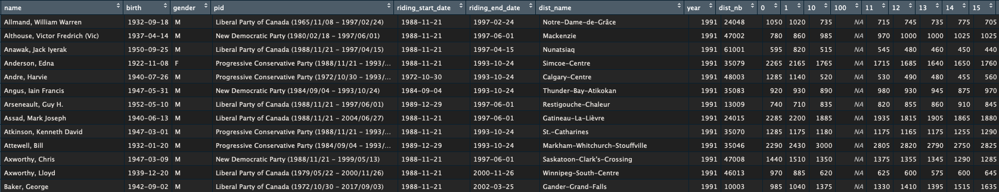

Note: I did this work as part of my doctoral dissertation and I am currently using the dataset in a working paper. Here’s how to cite the data when using it in your own work: Vallée-Dubois, Florence. (2020). Canadian Parliamentarians and Census Data, 1991-2015 [data file].
Censuses of Canada are carried out every five years. Since 1991, the census data is available at the level of federal electoral districts, so it is possible to match these data with information on parliamentarians (i.e, info on who has been elected in each riding). The end product looks like this, with observations for every MP, with info their riding at the time of their election.

Here, I share with you the code I used to get there. It required dealing text data (the ridings’ name), and a lot of back-and-forth between the code and output. I welcome comments on how to improve this code!
The end-product can be found here in .csv format. The following variables are included:
name: MP’s namebirth: MP’s date of birthgender: MP’s genderpid: MP’s party affiliationriding_start_date: start date for the parliamentary
termriding_end_date: end date for the parliamentary
termdist_name: riding’s nameyear: year used to match census info with
parliamentarians’ info (in general, they’re the start year for the
parliament, except in the 34th parliament, when 1991 is used instead of
1988)dist_nb: riding’s number0 to 100: age categories – number of
people in each ageBecause most elections since 1991 happened between census years (1993-1997-2000-2004-2006-2008-2011-2015), I interpolated population data in-between census years in order to obtain values on the demogrpahic profile of ridings on election years. As of now, I focused on the population’s age, but I will extend this work to other demographic variables that are available at the level of federal ridings (e.g., the unemployment rate, the number of immigrants, etc.).
But before we start matching the censuses with parliamentary data, we need to address one important challenge: representation orders have changed since the early 1990s. In other words, there has been redistricting.
Census data are available for the representation orders that come before and after each census. For example, the 1996 census data are provided for the 1987 and 1996 representation orders. This is useful, because we can use different pairs of censuses to interpolate demographics in different election years. For example, the 2000 election was run under the 1996 r.o. and falls between the 1996 and 2001 censuses. We will use the 1996 and 2001 censuses at the level of the 1996 r.o. to find the demographic profile in 2000. In the same way, we will match the 1996 election data with the 1996 census data under the 1987 r.o., because this was the representation order in the 1996 election.
I used the following resources to learn about federal electoral districts, representation orders, and census and parliamentary data in general:
In what follows, we will:
There is a LOT of code so I recommend hiding all code (you can use the button at the top of this page), then showing one chunk at a time as you read this post. You will need these packages to follow along:
library(tidyverse)
library(lubridate)
library(fuzzyjoin) # i'm not even sure I ended up using it, but made a few attempts with this package.I found the raw census datasets on the Statistics Canada wesbsite. Selecting “Federal electoral district” under the “Geography” tab, you will see which census data products are available at the level of ridings. For now, I got the “Age and sex” topic and downloaded every census file available. The older files are available in a weird format (Beyond 20/20). Beyond 20/20 is a software available on Windows. I am a Mac user, but I opened the files on a Windows machine, then saved them in .csv. If you don’t want to go through the hassle, I’ve made the .csv files available in the Github repo for this website.
I will not be walking you through each dataset recode because the steps are always the same. But basically, we start by reshaping the data from wide to long in order to get an observation for each riding/age combination (for e.g. Rosemont 0 yr old, Rosemont 1 yr old, Rosemont 2yrs old, etc.) This tells us how many people of every age are in each riding. Then, we clean-up the names of ridings (remove special characters, etc.) This is where I had to do the most back-and-forth, because some censuses used different spellings for the same riding (double dashes instead of single dashes, for e.g.), so in the end I needed to correct some spellings manually. It’s a good thing I had some knowledge about Canadian federal elections ;)
d91 <- read.csv("documentation/data/input/1991census_1987order.csv", sep = ",")
d91_clean <- d91 %>%
rename(geo = Géographie, # choosing more basic variable names
sex = Sexe..3.) %>%
filter(str_detect(geo, "[:alpha:]"), # keeping observations with names (without are census subdivisions)
str_detect(sex, "Total"), # keeping total values for sex -- we don't need men and women
!str_detect(geo, "Newfoundland | Terre-Neuve"), # removing obs that are the provinces
!str_detect(geo, "Prince Edward Island | Île-du-Prince-Édouard"),
!str_detect(geo, "Nova Scotia | Nouvelle-Écosse"),
!str_detect(geo, "New Brunswick | Nouveau-Brunswick"),
!str_detect(geo, "Quebec | Québec"),
!str_detect(geo, "Ontario \\(35\\)"),
!str_detect(geo, "Saskatchewan"),
!str_detect(geo, "Manitoba"),
!str_detect(geo, "Alberta"),
!str_detect(geo, "British Columbia | Colombie-Britannique"),
!str_detect(geo, "Yukon Territory"),
!str_detect(geo, "Northwest Territories"),
!str_detect(geo, "Canada \\(00\\)")) %>% # removing the Canada obs
gather(age, value, Total...Groupes.d.âge:X90.et.plus) %>% # from wide to long
filter(!str_detect(age, "Total")) %>% # removing obs that are "age group totals"
mutate(age = str_remove(age, "X")) %>% # removing "X" in front of age categories
dplyr::select(geo, age, value) # keeping the 3 variables of interest
# we now have a value (obs.) for each electoral district and age category
# just looking through the age variable to check what's remaining
table(d91_clean$age)
# people <1 y.o. are identified as "less than one year" and people >90 y.o.
# are categorized as "more than 90"
d91_clean <- d91_clean %>%
mutate(age = ifelse(age == "Moins.de.1", 0, age), # recoding these two
age = ifelse(age == "90.et.plus", 90, age)) %>% # "< 1 year" = "0" and "> 90" = "90"
filter(!str_detect(age, "\\.")) # age categories with periods in them correspond to age groups
# we don't want them, we only want single ages (except for the 90+ age group)
table(d91_clean$age) # seems pretty good
class(d91_clean$age) # I have a feeling this variable is not numeric
d91_clean <- d91_clean %>%
mutate(age = as.numeric(age)) # transforming it to numeric
table(d91_clean$age)
class(d91_clean$age)
d91_clean <- d91_clean %>%
mutate(census = 1991, # adding a variable telling us which census it is
ro = 1987) # adding a variable for the R.O. (I removed it later, turns out I did not need it)
# Here's an important step. The "geo" variable has the names of district _and_ their numbers
# (in parentheses). I want to keep these two pieces of information, but in two different
# variables, because I may need one of the other for merging purposes later on. I will
# therefore split this variable into two (dist_name and dist_nb), then clean them up
# (especially district names).
d91_clean <- d91_clean %>%
mutate(dist_name = str_remove_all(geo, "[0-9]+"), # removing digits from geo to create "dist_name"
dist_name = str_remove_all(dist_name, "\\(\\)"), # removing the empty parentheses
# there is still information in parentheses (the district names' translation), we want to
# get rid of that
dist_name = str_remove_all(dist_name, "\\([^()]+\\)"),
# creating the "dist_nb" variable by extracting what's in parentheses from the "geo" variable
# (I could not only extract digits because there are other digits, which have nothing to do
#with the district numbers)
dist_nb = str_extract_all(geo, "\\([^()]+\\)")) %>%
unnest(dist_nb) %>% # separating the information we extracted from parentheses
filter(str_detect(dist_nb, "-", negate = TRUE),
# remove obs where the district nb is not only a number
str_detect(dist_nb, "[:alpha:]", negate = TRUE)) %>%
# again, extract digits from their parenteses
mutate(dist_nb = str_extract_all(dist_nb, "(?<=\\().+?(?=\\))")) %>%
# I don't think the next line and the next are necessary in 1991, but in other years it is
unnest(dist_nb) %>%
filter(str_detect(dist_nb, " ", negate = TRUE)) %>%
mutate(dist_name = str_replace_all(dist_name, " - ", "-"),
# the next lines make sure that district names have the same spelling in every census recode
dist_name = str_replace_all(dist_name, " -", "-"),
dist_name = str_replace_all(dist_name, "- ", "-"), # this could probably be more tidy
dist_name = str_replace_all(dist_name, "--", "-"),
dist_name = str_trim(dist_name, side = "both"),
# Timiskaming is called Timiskaming French River in the 1996 census (first back-and-forth!)
dist_name = ifelse(dist_name == "Timiskaming", "Timiskaming-French River", dist_name)) %>%
select(-geo, -ro) # we want every data frames to have the same variables
length(unique(d91_clean$dist_nb)) # just making sure we have 295 seats
length(unique(d91_clean$dist_name)) # all goodMost of the work is now done, but we have to pay attention to at least one thing when recoding other censuses: other raw datasets are not always organized the same way. Statistics Canada did not only change the data formats, they also changed the names of variables, how district names and number are compiled, etc. So we won’t always to able to run exactly the same code — a few changes will be necessary here and there.
d96 <- read.csv("documentation/data/input/1996census_1987order.csv", sep = ",")
d96_clean <- d96 %>% rename(geo = Géographie, sex = Sexe..3.) %>% filter(str_detect(geo,
"[:alpha:]"), str_detect(sex, "Total"), !str_detect(geo, "Newfoundland | Terre-Neuve"),
!str_detect(geo, "Prince Edward Island | Île-du-Prince-Édouard"), !str_detect(geo,
"Nova Scotia | Nouvelle-Écosse"), !str_detect(geo, "New Brunswick | Nouveau-Brunswick"),
!str_detect(geo, "Quebec | Québec"), !str_detect(geo, "Ontario \\(35\\)"), !str_detect(geo,
"Saskatchewan"), !str_detect(geo, "Manitoba"), !str_detect(geo, "Alberta"),
!str_detect(geo, "British Columbia | Colombie-Britannique"), !str_detect(geo,
"Yukon Territory"), !str_detect(geo, "Northwest Territories"), !str_detect(geo,
"Canada \\(00\\)")) %>% gather(age, value, Total...Âge:X90.) %>% filter(!str_detect(age,
"Total")) %>% mutate(age = str_remove(age, "X")) %>% dplyr::select(geo, age,
value)
table(d96_clean$age)
d96_clean <- d96_clean %>% mutate(age = ifelse(age == "moins.de.1", 0, age), age = ifelse(age ==
"90.", 90, age)) %>% filter(!str_detect(age, "\\."))
table(d96_clean$age)
class(d96_clean$age)
d96_clean <- d96_clean %>% mutate(age = as.numeric(age))
table(d96_clean$age)
class(d96_clean$age)
d96_clean <- d96_clean %>% mutate(census = 1996, ro = 1987)
d96_clean <- d96_clean %>% mutate(dist_name = str_remove_all(geo, "[0-9]+"), dist_name = str_remove_all(dist_name,
"\\(\\)"), dist_name = str_remove_all(dist_name, "\\([^()]+\\)"), dist_nb = str_extract_all(geo,
"\\([^()]+\\)")) %>% unnest(dist_nb) %>% filter(str_detect(dist_nb, "-", negate = TRUE),
str_detect(dist_nb, "[:alpha:]", negate = TRUE)) %>% mutate(dist_nb = str_extract_all(dist_nb,
"(?<=\\().+?(?=\\))")) %>% unnest(dist_nb) %>% filter(str_detect(dist_nb, " ",
negate = TRUE)) %>% mutate(dist_name = str_replace_all(dist_name, " - ", "-"),
dist_name = str_replace_all(dist_name, " -", "-"), dist_name = str_replace_all(dist_name,
"- ", "-"), dist_name = str_replace_all(dist_name, "--", "-"), dist_name = str_trim(dist_name,
side = "both")) %>% select(-geo, -ro)
length(unique(d96_clean$dist_nb))
length(unique(d96_clean$dist_name))d96_2 <- read.csv("documentation/data/input/1996census_1996order.csv", sep = ",")
d96_2_clean <- d96_2 %>% rename(geo = Géographie, sex = Sexe..3.) %>% filter(str_detect(geo,
"[:alpha:]"), str_detect(sex, "Total"), !str_detect(geo, "Newfoundland | Terre-Neuve"),
!str_detect(geo, "Prince Edward Island | Île-du-Prince-Édouard"), !str_detect(geo,
"Nova Scotia | Nouvelle-Écosse"), !str_detect(geo, "New Brunswick | Nouveau-Brunswick"),
!str_detect(geo, "Quebec | Québec"), !str_detect(geo, "Ontario \\(35\\)"), !str_detect(geo,
"Saskatchewan"), !str_detect(geo, "Manitoba"), !str_detect(geo, "Alberta"),
!str_detect(geo, "British Columbia | Colombie-Britannique"), !str_detect(geo,
"Yukon Territory"), !str_detect(geo, "Northwest Territories"), !str_detect(geo,
"Canada \\(00\\)")) %>% gather(age, value, Total...Âge:X90.) %>% filter(!str_detect(age,
"Total")) %>% mutate(age = str_remove(age, "X")) %>% dplyr::select(geo, age,
value)
table(d96_2_clean$age)
d96_2_clean <- d96_2_clean %>% mutate(age = ifelse(age == "moins.de.1", 0, age),
age = ifelse(age == "90.", 90, age)) %>% filter(!str_detect(age, "\\."))
table(d96_2_clean$age)
class(d96_2_clean$age)
d96_2_clean <- d96_2_clean %>% mutate(age = as.numeric(age))
table(d96_2_clean$age)
class(d96_2_clean$age)
d96_2_clean <- d96_2_clean %>% mutate(census = 1996, ro = 1996)
d96_2_clean <- d96_2_clean %>% mutate(dist_name = str_remove_all(geo, "[0-9]+"),
dist_name = str_remove_all(dist_name, "\\(\\)"), dist_nb = str_extract_all(geo,
"\\([^()]+\\)"), dist_nb = str_extract_all(dist_nb, "(?<=\\().+?(?=\\))")) %>%
unnest(dist_nb) %>% mutate(dist_name = str_replace_all(dist_name, " - ", "-"),
dist_name = str_replace_all(dist_name, " -", "-"), dist_name = str_replace_all(dist_name,
"- ", "-"), dist_name = str_replace_all(dist_name, "--", "-"), dist_name = str_trim(dist_name,
side = "both"), dist_name = str_replace_all(dist_name, " / ", "/")) %>% select(-geo,
-ro)
length(unique(d96_2_clean$dist_nb))
length(unique(d96_2_clean$dist_name))d01 <- read.csv("documentation/data/input/2001census_1996order.csv", encoding = "latin1")
summary(d01)
d01_clean <- d01 %>% rename(geo = Géographie, sex = Sexe..3.) %>% filter(str_detect(geo,
"[:alpha:]"), str_detect(sex, "Total"), !str_detect(geo, "Newfoundland | Terre-Neuve"),
!str_detect(geo, "Prince Edward Island | Île-du-Prince-Édouard"), !str_detect(geo,
"Nova Scotia | Nouvelle-Écosse"), !str_detect(geo, "New Brunswick - Nouveau-Brunswick \\(13\\)"),
!str_detect(geo, "Québec \\(24\\)"), !str_detect(geo, "Ontario \\(35\\)"), !str_detect(geo,
"Saskatchewan"), !str_detect(geo, "Manitoba"), !str_detect(geo, "Alberta"),
!str_detect(geo, "British Columbia | Colombie-Britannique"), !str_detect(geo,
"Yukon Territory"), !str_detect(geo, "Northwest Territories"), !str_detect(geo,
"Canada"), !str_detect(geo, "Nunavut \\(62\\)")) %>% gather(age, value, Total...Âge:X100.) %>%
filter(!str_detect(age, "Total")) %>% dplyr::select(geo, age, value)
table(d01_clean$age)
d01_clean <- d01_clean %>% mutate(age = ifelse(age == "Moins.de.1.an", 0, age), age = ifelse(age ==
"X100.", 100, age), age = str_remove_all(age, "X")) %>% filter(!str_detect(age,
"\\."))
table(d01_clean$age)
class(d01_clean$age)
d01_clean <- d01_clean %>% mutate(age = as.numeric(age))
table(d01_clean$age)
class(d01_clean$age)
d01_clean <- d01_clean %>% mutate(census = 2001, ro = 1996)
d01_clean <- d01_clean %>% mutate(dist_name = str_remove_all(geo, "[0-9]+"), dist_name = str_remove_all(dist_name,
"\\(\\)"), dist_nb = str_extract_all(geo, "\\([^()]+\\)"), dist_nb = str_extract_all(dist_nb,
"(?<=\\().+?(?=\\))")) %>% unnest(dist_nb) %>% mutate(dist_name = str_replace_all(dist_name,
" - ", "-"), dist_name = str_replace_all(dist_name, " -", "-"), dist_name = str_replace_all(dist_name,
"- ", "-"), dist_name = str_replace_all(dist_name, "--", "-"), dist_name = str_trim(dist_name,
side = "both"), dist_name = str_replace_all(dist_name, " / ", "/")) %>% select(-geo,
-ro)
length(unique(d01_clean$dist_nb))
length(unique(d01_clean$dist_name))d01_2 <- read.csv("documentation/data/input/2001census_2003order.csv", encoding = "latin1")
summary(d01_2)
d01_2_clean <- d01_2 %>% rename(geo = Géographie, sex = Sexe..3.) %>% filter(str_detect(geo,
"[:alpha:]"), str_detect(sex, "Total"), !str_detect(geo, "Newfoundland | Terre-Neuve"),
!str_detect(geo, "Prince Edward Island | Île-du-Prince-Édouard"), !str_detect(geo,
"Nova Scotia | Nouvelle-Écosse"), !str_detect(geo, "New Brunswick - Nouveau-Brunswick \\(13\\)"),
!str_detect(geo, "Québec \\(24\\)"), !str_detect(geo, "Ontario \\(35\\)"), !str_detect(geo,
"Saskatchewan"), !str_detect(geo, "Manitoba"), !str_detect(geo, "Alberta"),
!str_detect(geo, "British Columbia | Colombie-Britannique"), !str_detect(geo,
"Yukon Territory"), !str_detect(geo, "Northwest Territories"), !str_detect(geo,
"Canada"), !str_detect(geo, "Nunavut \\(62\\)")) %>% gather(age, value, Total...Âge:X100.) %>%
filter(!str_detect(age, "Total")) %>% dplyr::select(geo, age, value)
table(d01_2_clean$age)
d01_2_clean <- d01_2_clean %>% mutate(age = ifelse(age == "Moins.de.1.an", 0, age),
age = ifelse(age == "X100.", 100, age)) %>% mutate(age = str_remove(age, "ans"),
age = str_remove(age, "an")) %>% filter(!str_detect(age, "\\.1"), !str_detect(age,
"\\.2"), !str_detect(age, "\\.3"), !str_detect(age, "\\.4"), !str_detect(age,
"\\.5"), !str_detect(age, "\\.6"), !str_detect(age, "\\.7"), !str_detect(age,
"\\.8"), !str_detect(age, "\\.9")) %>% mutate(age = str_remove(age, "X"), age = str_remove(age,
"\\."))
table(d01_2_clean$age)
class(d01_2_clean$age)
d01_2_clean <- d01_2_clean %>% mutate(age = as.numeric(age))
table(d01_2_clean$age)
class(d01_2_clean$age)
d01_2_clean <- d01_2_clean %>% mutate(census = 2001, ro = 2003)
d01_2_clean <- d01_2_clean %>% mutate(dist_name = str_remove_all(geo, "[0-9]+"),
dist_name = str_remove_all(dist_name, "\\(\\)"), dist_nb = str_extract_all(geo,
"\\([^()]+\\)"), dist_nb = str_extract_all(dist_nb, "(?<=\\().+?(?=\\))")) %>%
unnest(dist_nb) %>% mutate(dist_name = str_replace_all(dist_name, " - ", "/"),
dist_name = str_replace_all(dist_name, " -", "-"), dist_name = str_replace_all(dist_name,
"- ", "-"), dist_name = str_replace_all(dist_name, "--", "-"), dist_name = str_trim(dist_name,
side = "both"), dist_name = str_replace_all(dist_name, " / ", "/")) %>% select(-geo,
-ro)
length(unique(d01_2_clean$dist_nb))
length(unique(d01_2_clean$dist_name))d06 <- read.csv("documentation/data/input/2006census_2003order.csv", encoding = "latin1")
summary(d06)
d06_clean <- d06 %>% rename(geo = Géographie, sex = Sexe..3.) %>% select(-Âge.médian) %>%
filter(str_detect(geo, "[:alpha:]"), str_detect(sex, "Total"), !str_detect(geo,
"Newfoundland | Terre-Neuve"), !str_detect(geo, "Prince Edward Island | Île-du-Prince-Édouard"),
!str_detect(geo, "Nova Scotia | Nouvelle-Écosse"), !str_detect(geo, "New Brunswick / Nouveau-Brunswick \\(13\\)"),
!str_detect(geo, "Québec \\(24\\)"), !str_detect(geo, "Ontario \\(35\\)"),
!str_detect(geo, "Saskatchewan"), !str_detect(geo, "Manitoba"), !str_detect(geo,
"Alberta"), !str_detect(geo, "Colombie-Britannique \\(59\\)"), !str_detect(geo,
"Yukon Territory"), !str_detect(geo, "Northwest Territories"), !str_detect(geo,
"Canada"), !str_detect(geo, "Nunavut \\(62\\)")) %>% gather(age, value,
Total...Âge:X100.ans.et.plus) %>% filter(!str_detect(age, "Total")) %>% dplyr::select(geo,
age, value)
table(d06_clean$age)
d06_clean <- d06_clean %>% mutate(age = ifelse(age == "Moins.de.1.an", 0, age), age = ifelse(age ==
"X100.ans.et.plus", 100, age), age = str_remove_all(age, "X")) %>% filter(!str_detect(age,
"ans"))
table(d06_clean$age)
class(d06_clean$age)
d06_clean <- d06_clean %>% mutate(age = as.numeric(age))
table(d06_clean$age)
class(d06_clean$age)
d06_clean <- d06_clean %>% mutate(census = 2006, ro = 2003)
d06_clean <- d06_clean %>% mutate(dist_name = str_remove_all(geo, "[0-9]+"), dist_name = str_remove_all(dist_name,
"\\(\\)"), dist_nb = str_extract_all(geo, "\\([^()]+\\)"), dist_nb = str_extract_all(dist_nb,
"(?<=\\().+?(?=\\))")) %>% unnest(dist_nb) %>% mutate(dist_name = str_replace_all(dist_name,
" - ", "-"), dist_name = str_replace_all(dist_name, " -", "-"), dist_name = str_replace_all(dist_name,
"- ", "-"), dist_name = str_replace_all(dist_name, "--", "-"), dist_name = str_trim(dist_name,
side = "both"), dist_name = str_replace_all(dist_name, " / ", "/")) %>% select(-geo,
-ro)
length(unique(d06_clean$dist_nb))
length(unique(d06_clean$dist_name))d11 <- read.csv("documentation/data/input/2011census_2003order.csv", encoding = "latin1")
summary(d11)
d11_clean <- d11 %>% rename(geo = Géographie, sex = Sexe..3.) %>% select(-Âge.médian) %>%
filter(str_detect(geo, "[:alpha:]"), str_detect(sex, "Total"), !str_detect(geo,
"Newfoundland | Terre-Neuve"), !str_detect(geo, "Prince Edward Island | Île-du-Prince-Édouard"),
!str_detect(geo, "Nova Scotia | Nouvelle-Écosse"), !str_detect(geo, "New Brunswick / Nouveau-Brunswick \\(13\\)"),
!str_detect(geo, "Quebec | Québec"), !str_detect(geo, "Ontario \\(35\\)"),
!str_detect(geo, "Saskatchewan"), !str_detect(geo, "Manitoba"), !str_detect(geo,
"Alberta"), !str_detect(geo, "Colombie-Britannique \\(59\\)"), !str_detect(geo,
"Yukon \\(60\\)"), !str_detect(geo, "Northwest Territories"), !str_detect(geo,
"Canada"), !str_detect(geo, "Nunavut \\(62\\)")) %>% gather(age, value,
Total...Âge:X100.ans.et.plus) %>% filter(!str_detect(age, "Total")) %>% dplyr::select(geo,
age, value)
table(d11_clean$age)
d11_clean <- d11_clean %>% mutate(age = ifelse(age == "Moins.de.1.an", 0, age), age = ifelse(age ==
"X100.ans.et.plus", 100, age), age = str_remove(age, "X")) %>% filter(!str_detect(age,
"ans"))
table(d11_clean$age)
class(d11_clean$age)
d11_clean <- d11_clean %>% mutate(age = as.numeric(age))
table(d11_clean$age)
class(d11_clean$age)
d11_clean <- d11_clean %>% mutate(census = 2011, ro = 2003)
d11_clean <- d11_clean %>% mutate(dist_name = str_remove_all(geo, "[0-9]+"), dist_name = str_remove_all(dist_name,
"\\(\\)"), dist_nb = str_extract_all(geo, "\\([^()]+\\)"), dist_nb = str_extract_all(dist_nb,
"(?<=\\().+?(?=\\))")) %>% unnest(dist_nb) %>% mutate(dist_name = str_replace_all(dist_name,
" - ", "-"), dist_name = str_replace_all(dist_name, " -", "-"), dist_name = str_replace_all(dist_name,
"- ", "-"), dist_name = str_replace_all(dist_name, "--", "-"), dist_name = str_trim(dist_name,
side = "both"), dist_name = str_replace_all(dist_name, " / ", "/")) %>% select(-geo,
-ro)
length(unique(d06_clean$dist_nb))
length(unique(d06_clean$dist_name))d11_2 <- read.csv("documentation/data/input/2011census_2013order.csv", encoding = "latin1")
summary(d11_2)
d11_2_clean <- d11_2 %>% rename(geo = Géographie, sex = Sexe..3.) %>% select(-Âge.médian) %>%
filter(str_detect(geo, "[:alpha:]"), str_detect(sex, "Total"), !str_detect(geo,
"Newfoundland | Terre-Neuve"), !str_detect(geo, "Prince Edward Island | Île-du-Prince-Édouard"),
!str_detect(geo, "Nova Scotia | Nouvelle-Écosse"), !str_detect(geo, "New Brunswick / Nouveau-Brunswick \\(13\\)"),
!str_detect(geo, "Quebec | Québec"), !str_detect(geo, "Ontario \\(35\\)"),
!str_detect(geo, "Saskatchewan \\(47\\)"), !str_detect(geo, "Manitoba"),
!str_detect(geo, "Alberta"), !str_detect(geo, "Colombie-Britannique \\(59\\)"),
!str_detect(geo, "Yukon \\(60\\)"), !str_detect(geo, "Northwest Territories / Territoires du Nord-Ouest \\(61\\)"),
!str_detect(geo, "Canada"), !str_detect(geo, "Nunavut \\(62\\)")) %>% gather(age,
value, Total...Âge:X100.ans.et.plus) %>% filter(!str_detect(age, "Total")) %>%
dplyr::select(geo, age, value)
table(d11_2_clean$age)
d11_2_clean <- d11_2_clean %>% mutate(age = ifelse(age == "Moins.de.1.an", 0, age),
age = ifelse(age == "X100.ans.et.plus", 100, age), age = str_remove(age, "X")) %>%
filter(!str_detect(age, "ans"))
table(d11_2_clean$age)
class(d11_2_clean$age)
d11_2_clean <- d11_2_clean %>% mutate(age = as.numeric(age))
table(d11_2_clean$age)
class(d11_2_clean$age)
d11_2_clean <- d11_2_clean %>% mutate(census = 2011, ro = 2013)
d11_2_clean <- d11_2_clean %>% mutate(dist_name = str_remove_all(geo, "[0-9]+"),
dist_name = str_remove_all(dist_name, "\\(\\)"), dist_nb = str_extract_all(geo,
"\\([^()]+\\)"), dist_nb = str_extract_all(dist_nb, "(?<=\\().+?(?=\\))")) %>%
unnest(dist_nb) %>% mutate(dist_name = str_replace_all(dist_name, " - ", "-"),
dist_name = str_replace_all(dist_name, " -", "-"), dist_name = str_replace_all(dist_name,
"- ", "-"), dist_name = str_replace_all(dist_name, "--", "-"), dist_name = str_trim(dist_name,
side = "both"), dist_name = str_replace_all(dist_name, " / ", "/")) %>% select(-geo,
-ro)
length(unique(d11_2_clean$dist_nb))
length(unique(d11_2_clean$dist_name))d16 <- read.csv("documentation/data/input/2016census_2013order.csv", encoding = "latin1")
summary(d16)
d16_clean <- d16 %>% rename(geo = Géographie, sex = Sexe..3.) %>% select(-Âge.moyen) %>%
filter(str_detect(geo, "[:alpha:]"), str_detect(sex, "Total"), !str_detect(geo,
"Newfoundland | Terre-Neuve"), !str_detect(geo, "Prince Edward Island | Île-du-Prince-Édouard"),
!str_detect(geo, "Nova Scotia | Nouvelle-Écosse"), !str_detect(geo, "New Brunswick / Nouveau-Brunswick \\(13\\)"),
!str_detect(geo, "Quebec | Québec"), !str_detect(geo, "Ontario \\(35\\)"),
!str_detect(geo, "Saskatchewan \\(47\\)"), !str_detect(geo, "Manitoba"),
!str_detect(geo, "Alberta"), !str_detect(geo, "Colombie-Britannique \\(59\\)"),
!str_detect(geo, "Yukon \\(60\\)"), !str_detect(geo, "Northwest Territories / Territoires du Nord-Ouest \\(61\\)"),
!str_detect(geo, "Canada"), !str_detect(geo, "Nunavut \\(62\\)")) %>% gather(age,
value, Total...Âge:X100.ans.et.plus) %>% filter(!str_detect(age, "Total")) %>%
dplyr::select(geo, age, value)
table(d16_clean$age)
d16_clean <- d16_clean %>% mutate(age = ifelse(age == "Moins.de.1.an", 0, age), age = ifelse(age ==
"X100.ans.et.plus", 100, age), age = str_remove(age, "X")) %>% filter(!str_detect(age,
"ans"))
table(d16_clean$age)
class(d16_clean$age)
d16_clean <- d16_clean %>% mutate(age = as.numeric(age))
table(d16_clean$age)
class(d16_clean$age)
d16_clean <- d16_clean %>% mutate(census = 2016, ro = 2013)
d16_clean <- d16_clean %>% mutate(dist_name = str_remove_all(geo, "[0-9]+"), dist_name = str_remove_all(dist_name,
"\\(.*\\)"), dist_nb = str_extract_all(geo, "\\([^()]+\\)")) %>% unnest(dist_nb) %>%
filter(str_detect(dist_nb, "%", negate = TRUE)) %>% mutate(dist_nb = str_extract_all(dist_nb,
"(?<=\\().+?(?=\\))")) %>% unnest(dist_nb) %>% mutate(dist_name = str_replace_all(dist_name,
" - ", "-"), dist_name = str_replace_all(dist_name, " -", "-"), dist_name = str_replace_all(dist_name,
"- ", "-"), dist_name = str_replace_all(dist_name, "--", "-"), dist_name = str_trim(dist_name,
side = "both"), dist_name = str_replace_all(dist_name, " / ", "/"), dist_name = str_replace_all(dist_name,
" /", "/")) %>% select(-geo, -ro)
length(unique(d16_clean$dist_name))
length(unique(d16_clean$dist_nb))Here, we will merge censuses that use the same representation orders. For example, we need to merge the 1991 and 1996 census that use both the 1987 r.o. in order to be able (later) to interpolate age breakdowns in 1993, an election that was run under the 1987 r.o. At this step, there were (yet again) some spelling differences in district names. This made my head want to explode, but I managed to reach the expected result !
# we want to have one observation per electoral district, with variables for each age category
d91_clean <- d91_clean %>%
spread(age, value)
d96_clean <- d96_clean %>%
spread(age, value)
# we then bind the 2 dataframes (vertically, one on top of the other)
ro1987 <- rbind(d91_clean, d96_clean) %>%
gather(age, value, `0`:`90`) %>% # again, we gather the age variables
# now we have one observation for each district-census-age combination (long format)
spread(census, value) # finally, we come back to a wide format
length(unique(ro1987$dist_nb)) # making sure we have 295 seats
length(unique(ro1987$dist_name))
check <- ro1987 %>% # making sure the 2 census years are complete
filter(is.na(`1991`) == TRUE |
is.na(`1996`) == TRUE) # all goodd96_2_clean <- d96_2_clean %>%
spread(age, value)
# I have to merge 90+ yo categories because previous censuses do not have 90-100 y.o.
# it creates problems when binding
d01_clean <- d01_clean %>%
spread(age, value) %>%
unnest(dist_nb) %>% # dist_nb was a list
dplyr::group_by(dist_nb) %>%
mutate(`90+` = `90` + `91` + `92` +`93` +`94` +`95` +`96` +`97` +`98` +`99` +`100`) %>% # making a sum of values in the 90-100 age categories
ungroup() %>%
select(-`90`, -`91`, -`92`, -`93`, -`94`,
-`95`, -`96`, -`97`, -`98`, -`99`, -`100`) %>% # removing the extra variables
rename(`90` = `90+`) # ok, all set
ro1996 <- rbind(d96_2_clean, d01_clean) %>%
gather(age, value, `0`:`90`) %>%
spread(census, value)
length(unique(ro1996$dist_nb))
check <- ro1996 %>%
filter(is.na(`1996`) == TRUE |
is.na(`2001`) == TRUE)
# Nunavut is 61001 in 1996 and 62001 in 2001. Merging them.
ro1996 <- ro1996 %>%
gather(year, value, `1996`:`2001`) %>%
spread(age, value) %>%
mutate(dist_nb = ifelse(dist_nb == "62001" & year == "2001", "61001", dist_nb)) %>%
drop_na() %>%
gather(age, value, `0`:`90`) %>%
spread(year, value)
check <- ro1996 %>%
filter(is.na(`1996`) == TRUE |
is.na(`2001`) == TRUE)
list <- check %>% distinct(dist_name, dist_nb) # we have a problem, let's check the district names
# Fix different spellings
ro1996 <- ro1996 %>%
gather(year, value, `1996`:`2001`) %>%
unnest(dist_nb) %>%
drop_na() %>%
dplyr::group_by(dist_nb, age) %>%
mutate(new_name = dist_name[year == 1996]) %>% # making sure all districts use the 1996 names -- StatCan changed some names even though the r.o. did not change, but it does not mean that the districts changed (they have the same number). This is going to cause some trouble later, but we will fix it.
dplyr::ungroup() %>%
mutate(dist_name = new_name) %>%
select(-new_name) %>%
spread(year, value)
check <- ro1996 %>%
filter(is.na(`1996`) == TRUE |
is.na(`2001`) == TRUE)
length(unique(ro1996$dist_name))
length(unique(ro1996$dist_nb)) # all setd01_2_clean <- d01_2_clean %>%
spread(age, value)
d06_clean <- d06_clean %>%
spread(age, value)
ro2003 <- rbind(d01_2_clean, d06_clean) %>%
gather(age, value, `0`:`100`) %>%
spread(census, value)
ro2003 <- ro2003 %>%
gather(year, value, `2001`:`2006`) %>%
drop_na() %>%
dplyr::group_by(dist_nb, age) %>%
mutate(new_name = dist_name[year == 2001]) %>% # recode districts with different names in 2001 and 2006
dplyr::ungroup() %>%
mutate(dist_name = new_name) %>%
select(-new_name) %>%
spread(year, value)
length(unique(ro2003$dist_nb))
length(unique(ro2003$dist_name))
check <- ro2003 %>%
filter(is.na(`2001`) == TRUE |
is.na(`2006`) == TRUE)And map 2006 census (2003 Representation order) with 2006 parliament data.
d11_clean <- d11_clean %>% spread(age, value)
ro2003_2 <- rbind(d06_clean, d11_clean) %>% gather(age, value, `0`:`100`) %>% spread(census,
value)
length(unique(ro2003_2$dist_nb))
length(unique(ro2003_2$dist_name))
check <- ro2003_2 %>% filter(is.na(`2006`) == TRUE | is.na(`2011`) == TRUE)And map 2011 census (2003 Representation order) with 2011 parliament data.
d11_2_clean <- d11_2_clean %>%
spread(age, value)
d16_clean <- d16_clean %>%
spread(age, value)
ro2013 <- rbind(d11_2_clean, d16_clean) %>%
gather(age, value, `0`:`100`) %>%
spread(census, value)
length(unique(ro2013$dist_nb))
check <- ro2013 %>%
filter(is.na(`2011`) == TRUE |
is.na(`2016`) == TRUE) # oops
ro2013 <- ro2013 %>%
gather(year, value, `2011`:`2016`) %>%
drop_na() %>%
dplyr::group_by(dist_nb, age) %>%
mutate(new_name = dist_name[year == 2011]) %>% # recode districts with different names, use 2011 names
dplyr::ungroup() %>%
mutate(dist_name = new_name) %>%
select(-new_name) %>%
spread(year, value)
length(unique(ro2013$dist_nb))
length(unique(ro2013$dist_name))
check <- ro2013 %>%
filter(is.na(`2011`) == TRUE |
is.na(`2016`) == TRUE) # all goodElection years sometimes (often) fall in-between censuses. We will interpolate the number of people in each age group to years between censuses, so that we have ‘truer’ values for election years. We will do this for each of the five datasets we merged in the previous step.
First, we need to reshape the data from long to wide.
ro1987_imputation <- ro1987 %>% gather(year, value, `1991`:`1996`) %>% mutate(year = as.integer(year)) %>%
mutate(ro = "ro1987")
ro1996_imputation <- ro1996 %>% gather(year, value, `1996`:`2001`) %>% mutate(year = as.integer(year)) %>%
mutate(ro = "ro1996")
ro2003_imputation <- ro2003 %>% gather(year, value, `2001`:`2006`) %>% mutate(year = as.integer(year)) %>%
mutate(ro = "ro2003")
ro2003_2_imputation <- ro2003_2 %>% gather(year, value, `2006`:`2011`) %>% mutate(year = as.integer(year)) %>%
mutate(ro = "ro2003_2")
ro2013_imputation <- ro2013 %>% gather(year, value, `2011`:`2016`) %>% mutate(year = as.integer(year)) %>%
mutate(ro = "ro2013")
imputation_d <- rbind(ro1987_imputation, ro1996_imputation, ro2003_imputation, ro2003_2_imputation,
ro2013_imputation) # creating one big dataframeThen, we make the value imputation. This is a function I found online. It seems to work well, but suggestions as to how to do this otherwise would be more than welcome (is there a built-in function or package achieving this with fewer lines of code?)
expand_data <- function(x) {
years <- min(imputation_d$year):max(imputation_d$year)
btw_years <- 1
grid <- expand.grid(btw_year = btw_years, year = years)
x$btw_year <- 1
merged <- grid %>% left_join(x, by = c("year", "btw_year"))
merged$dist_name <- x$dist_name[1]
merged$dist_nb <- x$dist_nb[1]
merged$age <- x$age[1]
merged$ro <- x$ro[1]
return(merged)
}
interpolate_data <- function(data) {
xout <- 1:nrow(data)
y <- data$value
interpolation <- approx(x = xout[!is.na(y)], y = y[!is.na(y)], xout = xout)
data$yhat <- interpolation$y
return(data)
}
expand_and_interpolate <- function(x) interpolate_data(expand_data(x))
imputation_data <- imputation_d %>% group_by(dist_name, dist_nb, age, ro) %>% do(expand_and_interpolate(.))
print(as.data.frame(imputation_data))
imputation_data2 <- imputation_data %>% mutate(value = yhat) %>% select(-yhat, -btw_year) %>%
drop_na() %>% ungroup()
table(imputation_data2$ro, imputation_data2$year)
table(imputation_data2$dist_nb, imputation_data2$ro)
table(imputation_data2$age, imputation_data2$year)What to do with post-2016? We cannot make interpolate values for these years because they come after the last census. The next-best option would be to use the 2016 values for every year after 2016, but we would be loosing some variation in the demography.
We will match district names from the censuses with district names from the parliamentary data (34th to 42nd). The goal is to build a dataset of electoral ridings in each election year associated with the names of Members of each parliament and the demographic distribution of the population in each district.
I downloaded the parliamentary data from the Library of Parliament website. I could have extracted all Parliaments at once, but I preferred doing it one by one to make sure the clean-up process ran smoothly. The data is in somewhat of a weird format: each parliamentarian is its own observation (rows), with variables (columns) for his/her date of birth, type of work (MP or Senator), constituency(ies) (with accompanying dates), party affiliation(s), etc. What is most interesting to me is the MP’s name and riding.
I have to divide the constituency column, because it contains all the constituencies each MP has ever served in. My goal is to (1) divide this column to find all constituencies a given MP has been elected in, then (2) delete those that do not correspond to the Parliament I’m looking at. For example, for the 35th Parliament, I keep constituencies where members served between 25 October 1993 and 27 April 1997 only. The process is pretty much the same for each Parliament, so the code is commented for the first one only.
parl34 <- read.csv("documentation/data/input/parl_34.csv", sep = ";") %>%
mutate(type = Type.of.Parliamentarian, # rename
riding = Riding.Senatorial.Division,
name = Name,
birth = Date.of.Birth,
province = Province.Territory,
gender = Gender,
pid = Political.Affiliation,
# add commas between each "position (date)" combination to be able to separate them afterwards
type = str_replace_all(type, "\\)", "\\),"),
riding = str_replace_all(riding, "\\)", "\\),")) %>% # same thing with ridings
distinct(name, birth, gender, type, riding, province, pid) %>% # keep only the variables I need
separate_rows(type, sep = ",", convert = TRUE) %>% # separate rows based on "position (date)"
separate_rows(riding, sep = ",", convert = TRUE) %>% # again, separate rows based on "riding (date)"
mutate_all(~ str_trim(., side = "both")) %>% # trim white spaces
# extract dates from "position (date)" and "riding (date)" combinations
mutate(type_date = str_extract_all(type, "\\([^()]+\\)"),
type_date = str_extract_all(type_date, "(?<=\\().+?(?=\\))"),
riding_date = str_extract_all(riding, "\\([^()]+\\)"),
riding_date = str_extract_all(riding_date, "(?<=\\().+?(?=\\))")) %>%
unnest(c(type_date, riding_date)) %>%
mutate(dist_name = str_remove_all(riding, "\\(\\)"), # clean-up ridings: remove what's in parentheses
dist_name = str_remove_all(dist_name, "\\([^()]+\\)"),
dist_name = str_replace_all(dist_name, "--", "-")) %>%
filter(!str_detect(type, "Senator"), # remove senators
type_date != 0 | riding_date != 0,
# remove rows where dates are not identical: this is an important step, because we've duplicated
# (our even tripled, quadrupled) the number of observations when separating the position and
# riding rows in the beginning. Now we want to keep only those where the dates match, because
# they're the "real" information on MPs: what position they were in period X, and in which riding
type_date == riding_date) %>%
# divide start and end dates of sittings
separate(riding_date, sep = "-", into = c("riding_start_date", "riding_end_date")) %>%
mutate_all(~ str_trim(., side = "both")) %>% # clean-up
mutate(riding_start_date = ymd(riding_start_date), # transform to date format
riding_end_date = ymd(riding_end_date),
riding_end_date = as.character(riding_end_date),
# add end date to those who are still serving
riding_end_date = ifelse(is.na(riding_end_date) == TRUE, "2020-04-01", riding_end_date),
riding_end_date = as.Date(riding_end_date)) %>%
# keep only those who stopped serving after the election (Nov 21, 1988) and those who started before the
# end of the 34th parliament (Sept 8, 1993) -- because otherwise there are observations for MPs who
# stayed in the same riding for a longer time than the 34th parliament
filter(riding_end_date >= "1988-11-21" & riding_start_date <= "1993-09-08") %>%
select(-type_date, -province, -riding, -type) %>% # remove unecessary variables
mutate(year = 1991) %>% # I call it 1991 because this is the census we are going to merge it with
# next lines remove MP who are found twice because their district changed name during the 34th
# parliament (even if there hasn't been resdistricting)
group_by(name) %>%
arrange(desc(riding_start_date), .by_group = TRUE) %>%
slice(1) %>% # I have to say, I love the arrange() and slice() functions
ungroup()
length(unique(parl34$name))
length(unique(parl34$dist_name))
summary(parl34)
# We could not easily clean up the party variable, because we have one observation per MP (so their party
# affiliation matches the caucus they were in during the 34th parliament). I haven't done so but you
# could use the code we've already used to get rid of what is inside the parentheses.parl35 <- read.csv("documentation/data/input/parl_35.csv", sep = ";") %>%
mutate(type = Type.of.Parliamentarian, # rename
riding = Riding.Senatorial.Division,
name = Name,
birth = Date.of.Birth,
province = Province.Territory,
gender = Gender,
pid = Political.Affiliation,
type = str_replace_all(type, "\\)", "\\),"), # add commas to be able to separate the rows
riding = str_replace_all(riding, "\\)", "\\),")) %>% # again
distinct(name, birth, gender, type, riding, province, pid) %>% # remove unecessary variables
separate_rows(type, sep = ",", convert = TRUE) %>% # separate rows
separate_rows(riding, sep = ",", convert = TRUE) %>%
mutate_all(~ str_trim(., side = "both")) %>% # clean-up
mutate(type_date = str_extract_all(type, "\\([^()]+\\)"), # extract dates from positions
type_date = str_extract_all(type_date, "(?<=\\().+?(?=\\))"),
riding_date = str_extract_all(riding, "\\([^()]+\\)"), # extract dates from ridings
riding_date = str_extract_all(riding_date, "(?<=\\().+?(?=\\))")) %>%
unnest(c(type_date, riding_date)) %>%
mutate(dist_name = str_remove_all(riding, "\\(\\)"), # clean-up riding names
dist_name = str_remove_all(dist_name, "\\([^()]+\\)"),
dist_name = str_replace_all(dist_name, "--", "-")) %>%
filter(!str_detect(type, "Senator"), # remove senators
type_date != 0 | riding_date != 0, # remove rows where dates are not identical
type_date == riding_date) %>%
separate(riding_date, sep = "-", into = c("riding_start_date", "riding_end_date")) %>% # divide start and end dates
mutate_all(~ str_trim(., side = "both")) %>% # clean-up
mutate(riding_start_date = ymd(riding_start_date), # transform to date format
riding_end_date = ymd(riding_end_date), # again
riding_end_date = as.character(riding_end_date), # add end date to those who are still serving
riding_end_date = ifelse(is.na(riding_end_date) == TRUE, "2020-04-01", riding_end_date),
riding_end_date = as.Date(riding_end_date)) %>%
filter(riding_end_date >= "1993-10-25" & riding_start_date <= "1997-04-27") %>% # keep only those that end after the election (October 25, 1993) and those that start before the end of the 35th parliament (April 27, 1997)
#mutate(pid = str_remove_all(pid, "\\(\\)"), # clean-up party affiliations
# pid = str_remove_all(pid, "\\([^()]+\\)")) %>%
select(-type_date, -province, -riding, -type) %>% # remove unecessary variables
mutate(year = 1993)
length(unique(parl35$name))
length(unique(parl35$dist_name))
summary(parl35)parl36 <- read.csv("documentation/data/input/parl_36.csv", sep = ";") %>%
mutate(type = Type.of.Parliamentarian, # rename
riding = Riding.Senatorial.Division,
name = Name,
birth = Date.of.Birth,
province = Province.Territory,
gender = Gender,
pid = Political.Affiliation,
type = str_replace_all(type, "\\)", "\\),"), # add commas to be able to separate the rows
riding = str_replace_all(riding, "\\)", "\\),")) %>% # again
distinct(name, birth, gender, type, riding, province, pid) %>% # remove unecessary variables
separate_rows(type, sep = ",", convert = TRUE) %>% # separate rows
separate_rows(riding, sep = ",", convert = TRUE) %>%
mutate_all(~ str_trim(., side = "both")) %>% # clean-up
mutate(type_date = str_extract_all(type, "\\([^()]+\\)"), # extract dates from positions
type_date = str_extract_all(type_date, "(?<=\\().+?(?=\\))"),
riding_date = str_extract_all(riding, "\\([^()]+\\)"), # extract dates from ridings
riding_date = str_extract_all(riding_date, "(?<=\\().+?(?=\\))")) %>%
unnest(c(type_date, riding_date)) %>%
mutate(dist_name = str_remove_all(riding, "\\(\\)"), # clean-up riding names
dist_name = str_remove_all(dist_name, "\\([^()]+\\)"),
dist_name = str_replace_all(dist_name, "--", "-")) %>%
filter(!str_detect(type, "Senator"), # remove senators
type_date != 0 | riding_date != 0, # remove rows where dates are not identical
type_date == riding_date) %>%
separate(riding_date, sep = "-", into = c("riding_start_date", "riding_end_date")) %>% # divide start and end dates
mutate_all(~ str_trim(., side = "both")) %>% # clean-up
mutate(riding_start_date = ymd(riding_start_date), # transform to date format
riding_end_date = ymd(riding_end_date), # again
riding_end_date = as.character(riding_end_date), # add end date to those who are still serving
riding_end_date = ifelse(is.na(riding_end_date) == TRUE, "2020-04-01", riding_end_date),
riding_end_date = as.Date(riding_end_date)) %>%
filter(riding_end_date >= "1997-06-02" & riding_start_date <= "2000-10-22") %>% # keep only those that end after the election (June 2, 1997) and those that start before the end of the 35th parliament (October 22, 2000)
#mutate(pid = str_remove_all(pid, "\\(\\)"), # clean-up party affiliations
# pid = str_remove_all(pid, "\\([^()]+\\)")) %>%
select(-type_date, -province, -riding, -type) %>% # remove unecessary variables
mutate(year = 1997)
length(unique(parl36$name))
summary(parl36)
length(unique(parl36$dist_name)) # some have the names of the following representation order because MPs stayed a longer time in office. I have to recode them to the 1996 names
parl36 <- parl36 %>%
arrange(riding_start_date) %>%
dplyr::group_by(name, birth) %>%
filter(row_number() == 1)
length(unique(parl36$dist_name))
length(unique(parl36$name))parl37 <- read.csv("documentation/data/input/parl_37.csv", sep = ";") %>%
mutate(type = Type.of.Parliamentarian, # rename
riding = Riding.Senatorial.Division,
name = Name,
birth = Date.of.Birth,
province = Province.Territory,
gender = Gender,
pid = Political.Affiliation,
type = str_replace_all(type, "\\)", "\\),"), # add commas to be able to separate the rows
riding = str_replace_all(riding, "\\)", "\\),")) %>% # again
distinct(name, birth, gender, type, riding, province, pid) %>% # remove unecessary variables
separate_rows(type, sep = ",", convert = TRUE) %>% # separate rows
separate_rows(riding, sep = ",", convert = TRUE) %>%
mutate_all(~ str_trim(., side = "both")) %>% # clean-up
mutate(type_date = str_extract_all(type, "\\([^()]+\\)"), # extract dates from positions
type_date = str_extract_all(type_date, "(?<=\\().+?(?=\\))"),
riding_date = str_extract_all(riding, "\\([^()]+\\)"), # extract dates from ridings
riding_date = str_extract_all(riding_date, "(?<=\\().+?(?=\\))")) %>%
unnest(c(type_date, riding_date)) %>%
mutate(dist_name = str_remove_all(riding, "\\(\\)"), # clean-up riding names
dist_name = str_remove_all(dist_name, "\\([^()]+\\)"),
dist_name = str_replace_all(dist_name, "--", "-")) %>%
filter(!str_detect(type, "Senator"), # remove senators
type_date != 0 | riding_date != 0, # remove rows where dates are not identical
type_date == riding_date) %>%
separate(riding_date, sep = "-", into = c("riding_start_date", "riding_end_date")) %>% # divide start and end dates
mutate_all(~ str_trim(., side = "both")) %>% # clean-up
mutate(riding_start_date = ymd(riding_start_date), # transform to date format
riding_end_date = ymd(riding_end_date), # again
riding_end_date = as.character(riding_end_date), # add end date to those who are still serving
riding_end_date = ifelse(is.na(riding_end_date) == TRUE, "2020-04-01", riding_end_date),
riding_end_date = as.Date(riding_end_date)) %>%
filter(riding_end_date >= "2000-11-27" & riding_start_date <= "2004-05-23") %>% # keep only those that end after the election (November 27, 2000) and those that start before the end of the 35th parliament (May 23, 2004)
#mutate(pid = str_remove_all(pid, "\\(\\)"), # clean-up party affiliations
# pid = str_remove_all(pid, "\\([^()]+\\)")) %>%
select(-type_date, -province, -riding, -type) %>% # remove unecessary variables
mutate(year = 2000)
length(unique(parl37$name))
summary(parl37)
length(unique(parl37$dist_name)) parl38 <- read.csv("documentation/data/input/parl_38.csv", sep = ";") %>%
mutate(type = Type.of.Parliamentarian, # rename
riding = Riding.Senatorial.Division,
name = Name,
birth = Date.of.Birth,
province = Province.Territory,
gender = Gender,
pid = Political.Affiliation,
type = str_replace_all(type, "\\)", "\\),"), # add commas to be able to separate the rows
riding = str_replace_all(riding, "\\)", "\\),")) %>% # again
distinct(name, birth, gender, type, riding, province, pid) %>% # remove unecessary variables
separate_rows(type, sep = ",", convert = TRUE) %>% # separate rows
separate_rows(riding, sep = ",", convert = TRUE) %>%
mutate_all(~ str_trim(., side = "both")) %>% # clean-up
mutate(type_date = str_extract_all(type, "\\([^()]+\\)"), # extract dates from positions
type_date = str_extract_all(type_date, "(?<=\\().+?(?=\\))"),
riding_date = str_extract_all(riding, "\\([^()]+\\)"), # extract dates from ridings
riding_date = str_extract_all(riding_date, "(?<=\\().+?(?=\\))")) %>%
unnest(c(type_date, riding_date)) %>%
mutate(dist_name = str_remove_all(riding, "\\(\\)"), # clean-up riding names
dist_name = str_remove_all(dist_name, "\\([^()]+\\)"),
dist_name = str_replace_all(dist_name, "--", "-")) %>%
filter(!str_detect(type, "Senator"), # remove senators
type_date != 0 | riding_date != 0, # remove rows where dates are not identical
type_date == riding_date) %>%
separate(riding_date, sep = "-", into = c("riding_start_date", "riding_end_date")) %>% # divide start and end dates
mutate_all(~ str_trim(., side = "both")) %>% # clean-up
mutate(riding_start_date = ymd(riding_start_date), # transform to date format
riding_end_date = ymd(riding_end_date), # again
riding_end_date = as.character(riding_end_date), # add end date to those who are still serving
riding_end_date = ifelse(is.na(riding_end_date) == TRUE, "2020-04-01", riding_end_date),
riding_end_date = as.Date(riding_end_date)) %>%
filter(riding_end_date >= "2004-06-28" & riding_start_date <= "2005-11-29") %>% # keep only those that end after the election (June 28, 2004) and those that start before the end of the 35th parliament (November 29, 2005)
#mutate(pid = str_remove_all(pid, "\\(\\)"), # clean-up party affiliations
# pid = str_remove_all(pid, "\\([^()]+\\)")) %>%
select(-type_date, -province, -riding, -type) %>% # remove unecessary variables
mutate(year = 2004)
length(unique(parl38$name))
summary(parl38)
length(unique(parl38$dist_name)) # some have the names of the following representation order because MPs stayed a longer time in office. I have to recode them to the 2003 names
parl38 <- parl38 %>%
arrange(riding_start_date) %>%
dplyr::group_by(name, birth) %>%
filter(row_number() == 1)
length(unique(parl38$dist_name))
length(unique(parl38$name))parl39 <- read.csv("documentation/data/input/parl_39.csv", sep = ";") %>%
mutate(type = Type.of.Parliamentarian, # rename
riding = Riding.Senatorial.Division,
name = Name,
birth = Date.of.Birth,
province = Province.Territory,
gender = Gender,
pid = Political.Affiliation,
type = str_replace_all(type, "\\)", "\\),"), # add commas to be able to separate the rows
riding = str_replace_all(riding, "\\)", "\\),")) %>% # again
distinct(name, birth, gender, type, riding, province, pid) %>% # remove unecessary variables
separate_rows(type, sep = ",", convert = TRUE) %>% # separate rows
separate_rows(riding, sep = ",", convert = TRUE) %>%
mutate_all(~ str_trim(., side = "both")) %>% # clean-up
mutate(type_date = str_extract_all(type, "\\([^()]+\\)"), # extract dates from positions
type_date = str_extract_all(type_date, "(?<=\\().+?(?=\\))"),
riding_date = str_extract_all(riding, "\\([^()]+\\)"), # extract dates from ridings
riding_date = str_extract_all(riding_date, "(?<=\\().+?(?=\\))")) %>%
unnest(c(type_date, riding_date)) %>%
mutate(dist_name = str_remove_all(riding, "\\(\\)"), # clean-up riding names
dist_name = str_remove_all(dist_name, "\\([^()]+\\)"),
dist_name = str_replace_all(dist_name, "--", "-")) %>%
filter(!str_detect(type, "Senator"), # remove senators
type_date != 0 | riding_date != 0, # remove rows where dates are not identical
type_date == riding_date) %>%
separate(riding_date, sep = "-", into = c("riding_start_date", "riding_end_date")) %>% # divide start and end dates
mutate_all(~ str_trim(., side = "both")) %>% # clean-up
mutate(riding_start_date = ymd(riding_start_date), # transform to date format
riding_end_date = ymd(riding_end_date), # again
riding_end_date = as.character(riding_end_date), # add end date to those who are still serving
riding_end_date = ifelse(is.na(riding_end_date) == TRUE, "2020-04-01", riding_end_date),
riding_end_date = as.Date(riding_end_date)) %>%
filter(riding_end_date >= "2006-01-23" & riding_start_date <= "2008-09-07") %>% # keep only those that end after the election (January 23, 2006) and those that start before the end of the 35th parliament (September 7, 2008)
#mutate(pid = str_remove_all(pid, "\\(\\)"), # clean-up party affiliations
# pid = str_remove_all(pid, "\\([^()]+\\)")) %>%
select(-type_date, -province, -riding, -type) %>% # remove unecessary variables
mutate(year = 2006)
length(unique(parl39$name))
summary(parl39)
length(unique(parl39$dist_name))parl40 <- read.csv("documentation/data/input/parl_40.csv", sep = ";") %>%
mutate(type = Type.of.Parliamentarian, # rename
riding = Riding.Senatorial.Division,
name = Name,
birth = Date.of.Birth,
province = Province.Territory,
gender = Gender,
pid = Political.Affiliation,
type = str_replace_all(type, "\\)", "\\),"), # add commas to be able to separate the rows
riding = str_replace_all(riding, "\\)", "\\),")) %>% # again
distinct(name, birth, gender, type, riding, province, pid) %>% # remove unecessary variables
separate_rows(type, sep = ",", convert = TRUE) %>% # separate rows
separate_rows(riding, sep = ",", convert = TRUE) %>%
mutate_all(~ str_trim(., side = "both")) %>% # clean-up
mutate(type_date = str_extract_all(type, "\\([^()]+\\)"), # extract dates from positions
type_date = str_extract_all(type_date, "(?<=\\().+?(?=\\))"),
riding_date = str_extract_all(riding, "\\([^()]+\\)"), # extract dates from ridings
riding_date = str_extract_all(riding_date, "(?<=\\().+?(?=\\))")) %>%
unnest(c(type_date, riding_date)) %>%
mutate(dist_name = str_remove_all(riding, "\\(\\)"), # clean-up riding names
dist_name = str_remove_all(dist_name, "\\([^()]+\\)"),
dist_name = str_replace_all(dist_name, "--", "-")) %>%
filter(!str_detect(type, "Senator"), # remove senators
type_date != 0 | riding_date != 0, # remove rows where dates are not identical
type_date == riding_date) %>%
separate(riding_date, sep = "-", into = c("riding_start_date", "riding_end_date")) %>% # divide start and end dates
mutate_all(~ str_trim(., side = "both")) %>% # clean-up
mutate(riding_start_date = ymd(riding_start_date), # transform to date format
riding_end_date = ymd(riding_end_date), # again
riding_end_date = as.character(riding_end_date), # add end date to those who are still serving
riding_end_date = ifelse(is.na(riding_end_date) == TRUE, "2020-04-01", riding_end_date),
riding_end_date = as.Date(riding_end_date)) %>%
filter(riding_end_date >= "2008-11-14" & riding_start_date <= "2011-03-26") %>% # keep only those that end after the election (October 14, 2008) and those that start before the end of the 35th parliament (March 26, 2011)
#mutate(pid = str_remove_all(pid, "\\(\\)"), # clean-up party affiliations
# pid = str_remove_all(pid, "\\([^()]+\\)")) %>%
select(-type_date, -province, -riding, -type) %>% # remove unecessary variables
mutate(year = 2008)
length(unique(parl40$name))
summary(parl40)
length(unique(parl40$dist_name))parl41 <- read.csv("documentation/data/input/parl_41.csv", sep = ";") %>%
mutate(type = Type.of.Parliamentarian, # rename
riding = Riding.Senatorial.Division,
name = Name,
birth = Date.of.Birth,
province = Province.Territory,
gender = Gender,
pid = Political.Affiliation,
type = str_replace_all(type, "\\)", "\\),"), # add commas to be able to separate the rows
riding = str_replace_all(riding, "\\)", "\\),")) %>% # again
distinct(name, birth, gender, type, riding, province, pid) %>% # remove unecessary variables
separate_rows(type, sep = ",", convert = TRUE) %>% # separate rows
separate_rows(riding, sep = ",", convert = TRUE) %>%
mutate_all(~ str_trim(., side = "both")) %>% # clean-up
mutate(type_date = str_extract_all(type, "\\([^()]+\\)"), # extract dates from positions
type_date = str_extract_all(type_date, "(?<=\\().+?(?=\\))"),
riding_date = str_extract_all(riding, "\\([^()]+\\)"), # extract dates from ridings
riding_date = str_extract_all(riding_date, "(?<=\\().+?(?=\\))")) %>%
unnest(c(type_date, riding_date)) %>%
mutate(dist_name = str_remove_all(riding, "\\(\\)"), # clean-up riding names
dist_name = str_remove_all(dist_name, "\\([^()]+\\)"),
dist_name = str_replace_all(dist_name, "--", "-")) %>%
filter(!str_detect(type, "Senator"), # remove senators
type_date != 0 | riding_date != 0, # remove rows where dates are not identical
type_date == riding_date) %>%
separate(riding_date, sep = "-", into = c("riding_start_date", "riding_end_date")) %>% # divide start and end dates
mutate_all(~ str_trim(., side = "both")) %>% # clean-up
mutate(riding_start_date = ymd(riding_start_date), # transform to date format
riding_end_date = ymd(riding_end_date), # again
riding_end_date = as.character(riding_end_date), # add end date to those who are still serving
riding_end_date = ifelse(is.na(riding_end_date) == TRUE, "2020-04-01", riding_end_date),
riding_end_date = as.Date(riding_end_date)) %>%
filter(riding_end_date >= "2011-05-02" & riding_start_date <= "2015-08-15") %>% # keep only those that end after the election (May 2, 2011) and those that start before the end of the 35th parliament (August 2, 2015)
#mutate(pid = str_remove_all(pid, "\\(\\)"), # clean-up party affiliations
# pid = str_remove_all(pid, "\\([^()]+\\)")) %>%
select(-type_date, -province, -riding, -type) %>% # remove unecessary variables
mutate(year = 2011)
length(unique(parl41$name))
summary(parl41)
length(unique(parl41$dist_name))parl42 <- read.csv("documentation/data/input/parl_42.csv", sep = ";") %>%
mutate(type = Type.of.Parliamentarian, # rename
riding = Riding.Senatorial.Division,
name = Name,
birth = Date.of.Birth,
province = Province.Territory,
gender = Gender,
pid = Political.Affiliation,
type = str_replace_all(type, "\\)", "\\),"), # add commas to be able to separate the rows
riding = str_replace_all(riding, "\\)", "\\),")) %>% # again
distinct(name, birth, gender, type, riding, province, pid) %>% # remove unecessary variables
separate_rows(type, sep = ",", convert = TRUE) %>% # separate rows
separate_rows(riding, sep = ",", convert = TRUE) %>%
mutate_all(~ str_trim(., side = "both")) %>% # clean-up
mutate(type_date = str_extract_all(type, "\\([^()]+\\)"), # extract dates from positions
type_date = str_extract_all(type_date, "(?<=\\().+?(?=\\))"),
riding_date = str_extract_all(riding, "\\([^()]+\\)"), # extract dates from ridings
riding_date = str_extract_all(riding_date, "(?<=\\().+?(?=\\))")) %>%
unnest(c(type_date, riding_date)) %>%
mutate(dist_name = str_remove_all(riding, "\\(\\)"), # clean-up riding names
dist_name = str_remove_all(dist_name, "\\([^()]+\\)"),
dist_name = str_replace_all(dist_name, "--", "-")) %>%
filter(!str_detect(type, "Senator"), # remove senators
type_date != 0 | riding_date != 0, # remove rows where dates are not identical
type_date == riding_date) %>%
separate(riding_date, sep = "-", into = c("riding_start_date", "riding_end_date")) %>% # divide start and end dates
mutate_all(~ str_trim(., side = "both")) %>% # clean-up
mutate(riding_start_date = ymd(riding_start_date), # transform to date format
riding_end_date = ymd(riding_end_date), # again
riding_end_date = as.character(riding_end_date), # add end date to those who are still serving
riding_end_date = ifelse(is.na(riding_end_date) == TRUE, "2020-04-01", riding_end_date),
riding_end_date = as.Date(riding_end_date)) %>%
filter(riding_end_date >= "2015-10-19" & riding_start_date <= "2019-09-11") %>% # keep only those that end after the election (October 19, 2015) and those that start before the end of the 35th parliament (September 11, 2019)
#mutate(pid = str_remove_all(pid, "\\(\\)"), # clean-up party affiliations
# pid = str_remove_all(pid, "\\([^()]+\\)")) %>%
select(-type_date, -province, -riding, -type) %>% # remove unecessary variables
mutate(year = 2015)
length(unique(parl42$name))
summary(parl42)
length(unique(parl42$dist_name))We now have:
We will merge everything together by year and district name. Hopefully, the district names in the two sources will match (they won’t, but it’s not too bad, don’t worry). First, let’s keep only the census data we need, i.e. election years. I know some MPs were elected in-between elections (by-elections), but to make things simpler we will match them with the population data of the previous general election (i.e. the start date of the parliament they are serving in).
census_for_district <- imputation_data2 %>%
filter(year == 1991 | year == 1993 | year == 1997 | year == 2000 | year == 2004 |
year == 2006 | year == 2008 | year == 2011 | year == 2015) %>% # keeping election years
# keeping election years for the appropriate representation orders
filter(year == 1991 & ro == "ro1987" |
year == 1993 & ro == "ro1987" |
year == 1997 & ro == "ro1996" |
year == 2000 & ro == "ro1996" |
year == 2004 & ro == "ro2003" |
year == 2006 & ro == "ro2003_2" |
year == 2008 & ro == "ro2003_2" |
year == 2011 & ro == "ro2003_2" |
year == 2015 & ro == "ro2013") %>%
select(year, dist_name, dist_nb, age, value) %>%
spread(age, value) %>% # from long to wide
# removing french names that are sometimes added, as such: dist_name_end/dist_name_fr
separate(dist_name, sep = "\\/", into = c("dist_name", "dist_name_fr")) %>%
select(-dist_name_fr) %>%
mutate(dist_name = str_replace_all(dist_name, " ", " "), # removing extra space in-between words
# making names as similar as possible to candidates data
dist_name = str_replace_all(dist_name, " ", "-"))
# We will be merging each parliament dataframe individually to keep track of potential mistakes
# I mentioned earlier that choosing the 1996 district names upon merging censuses could create
# problems later on.Turns out the 2000 census data is not so easily merged with the parliament
# data because the district names are not all the same. I have to manually recode the names
# of many districts in 2000. After trying to merge once, I found other spelling discrepancies.
# This is why I am re-spelling some districts here. This is a very manual task but I could
# not find an alternative. So far things have run relatively smoothly, so I am not too
# frustrated by this task.
election88 <- census_for_district %>%
filter(year == 1991) %>%
mutate(dist_name = recode(dist_name, "Laval-Est" = "Laval-East"),
# these are basically lost in translation
dist_name = recode(dist_name, "Laval-Ouest" = "Laval-West"),
dist_name = recode(dist_name, "Mont-Royal" = "Mount-Royal"),
dist_name = recode(dist_name, "Capilano-Howe-Sound" = "Capilano"))
election93 <- census_for_district %>%
filter(year == 1993) %>%
mutate(dist_name = recode(dist_name, "Laval-Est" = "Laval-East"),
dist_name = recode(dist_name, "Laval-Ouest" = "Laval-West"),
dist_name = recode(dist_name, "Mont-Royal" = "Mount-Royal"))
election97 <- census_for_district %>%
filter(year == 1997) %>%
mutate(dist_name = recode(dist_name, "Laval-Est" = "Laval-East"),
dist_name = recode(dist_name, "Laval-Ouest" = "Laval-West"),
dist_name = recode(dist_name, "Mont-Royal" = "Mount-Royal"),
dist_name = recode(dist_name, "Québec-Est" = "Québec-East"),
dist_name = recode(dist_name, "BramptonWest-Mississauga" = "Brampton-West-Mississauga"))
election00 <- census_for_district %>%
filter(year == 2000) %>%
mutate(dist_name = recode(dist_name, "Carleton-Gloucester" = "Ottawa-Orléans"),
dist_name = recode(dist_name, "Verchères" = "Verchères-Les-Patriotes"),
dist_name = recode(dist_name, "Rosemont" = "Rosemont-Petite-Patrie"),
dist_name = recode(dist_name, "Moncton" = "Moncton-Riverview-Dieppe"),
dist_name = recode(dist_name, "Wentworth-Burlington" = "Ancaster-Dundas-Flamborough-Aldershot"),
dist_name = recode(dist_name, "Thunder-Bay-Nipigon" = "Thunder-Bay-Superior-North"),
dist_name = recode(dist_name, "Bras-d'Or" = "Bras-d'Or-Cape-Breton"),
dist_name = recode(dist_name, "Lotbinière" = "Lotbinière-L'Érable"),
dist_name = recode(dist_name, "Lévis" = "Lévis-et-Chutes-de-la-Chaudière"),
dist_name = recode(dist_name, "Verdun-Saint-Henri" = "Verdun-Saint-Henri-Saint-Paul-Pointe-Saint-Charles"),
dist_name = recode(dist_name, "Lac-Saint-Jean" = "Lac-Saint-Jean-Saguenay"),
dist_name = recode(dist_name, "Edmonton-East" = "Edmonton-Centre-East"),
dist_name = recode(dist_name, "West-Kootenay-Okanagan" = "Kootenay-Boundary-Okanagan"),
dist_name = recode(dist_name, "Beauport-Montmorency-Orléans" = "Beauport-Montmorency-Côte-de-Beaupré-Île-d'Orléans"),
dist_name = recode(dist_name, "Charleswood-Assiniboine" = "Charleswood-St.-James-Assiniboia"),
dist_name = recode(dist_name, "Chicoutimi" = "Chicoutimi-Le-Fjord"),
dist_name = recode(dist_name, "Kamloops" = "Thompson-and-Highland-Valleys"),
dist_name = recode(dist_name, "Bruce-Grey" = "Bruce-Grey-Owen-Sound"),
dist_name = recode(dist_name, "Stormont-Dundas" = "Stormont-Dundas-Charlottenburgh"),
dist_name = recode(dist_name, "Argenteuil-Papineau" = "Argenteuil-Papineau-Mirabel"),
dist_name = recode(dist_name, "Bramalea-Gore-Malton" = "Bramalea-Gore-Malton-Springdale"),
dist_name = recode(dist_name, "Charlesbourg" = "Charlesbourg-Jacques-Cartier"),
dist_name = recode(dist_name, "Broadview-Greenwood" = "Toronto-Danforth"),
dist_name = recode(dist_name, "Port-Moody-Coquitlam" = "Port-Moody-Coquitlam-Port-Coquitlam"),
dist_name = recode(dist_name, "Qu'Appelle" = "Regina-Qu'Appelle"),
dist_name = recode(dist_name, "Victoria-Haliburton" = "Haliburton-Victoria-Brock"),
dist_name = recode(dist_name, "Saint-Eustache-Sainte-Thérèse" = "Rivière-des-Mille-Îles"),
dist_name = recode(dist_name, "Kent-Essex" = "Chatham-Kent-Essex"),
dist_name = recode(dist_name, "Richelieu" = "Bas-Richelieu-Nicolet-Bécancour"),
dist_name = recode(dist_name, "Abitibi" = "Abitibi-Baie-James-Nunavik"),
dist_name = recode(dist_name, "Sackville-Eastern-Shore" = "Sackville-Musquodoboit-Valley-Eastern-Shore"),
dist_name = recode(dist_name, "Charlotte" = "New-Brunswick-Southwest"),
dist_name = recode(dist_name, "Rimouski-Mitis" = "Rimouski-Neigette-et-La-Mitis"),
dist_name = recode(dist_name, "Wanuskewin" = "Saskatoon-Wanuskewin"),
dist_name = recode(dist_name, "Laval-Est" = "Laval-East"),
dist_name = recode(dist_name, "Laval-Ouest" = "Laval-West"),
dist_name = recode(dist_name, "Mont-Royal" = "Mount-Royal"),
dist_name = recode(dist_name, "Québec-Est" = "Québec-East"),
dist_name = recode(dist_name, "BramptonWest-Mississauga" = "Brampton-West-Mississauga"))
election04 <- census_for_district %>%
filter(year == 2004) %>%
mutate(dist_name = recode(dist_name, "Laurier" = "Laurier-Sainte-Marie"))
election06 <- census_for_district %>%
filter(year == 2006) %>%
mutate(dist_name = recode(dist_name, "Mont-Royal" = "Mount-Royal"),
dist_name = recode(dist_name, "Montmagny-L'Islet-Kamouraska-Rivière-du-Loup" = "Montmagny-L’Islet-Kamouraska-Rivière-du-Loup"))
election08 <- census_for_district %>%
filter(year == 2008) %>%
mutate(dist_name = recode(dist_name, "Mont-Royal" = "Mount-Royal"),
dist_name = recode(dist_name, "Montmagny-L'Islet-Kamouraska-Rivière-du-Loup" = "Montmagny-L’Islet-Kamouraska-Rivière-du-Loup"))
election11 <- census_for_district %>%
filter(year == 2011) %>%
mutate(dist_name = recode(dist_name, "Mont-Royal" = "Mount-Royal"),
dist_name = recode(dist_name, "Montmagny-L'Islet-Kamouraska-Rivière-du-Loup" = "Montmagny-L’Islet-Kamouraska-Rivière-du-Loup"))
election15 <- census_for_district %>%
filter(year == 2015) %>%
mutate(dist_name = recode(dist_name, "Beauport-Côte-de-Beaupré-Île-d'Orléans-Charlevoix" = "Beauport-Côte-de-Beaupré-Île-D’Orléans-Charlevoix"),
dist_name = recode(dist_name, "Montmagny-L'Islet-Kamouraska-Rivière-du-Loup" = "Montmagny-L’Islet-Kamouraska-Rivière-du-Loup"))
# making district names as similar as possible to districts in the census data
# I added dashes everywhere, because sometimes there were dashes, sometimes not.
parl34 <- parl34 %>% mutate(dist_name = str_replace_all(dist_name, " ", "-"))
parl35 <- parl35 %>% mutate(dist_name = str_replace_all(dist_name, " ", "-"))
parl36 <- parl36 %>% mutate(dist_name = str_replace_all(dist_name, " ", "-"))
parl37 <- parl37 %>% mutate(dist_name = str_replace_all(dist_name, " ", "-"))
parl38 <- parl38 %>% mutate(dist_name = str_replace_all(dist_name, " ", "-"))
parl39 <- parl39 %>% mutate(dist_name = str_replace_all(dist_name, " ", "-"))
parl40 <- parl40 %>% mutate(dist_name = str_replace_all(dist_name, " ", "-"))
parl41 <- parl41 %>% mutate(dist_name = str_replace_all(dist_name, " ", "-"))
parl42 <- parl42 %>% mutate(dist_name = str_replace_all(dist_name, " ", "-"))FINAL step: Merging it all together! I tried using
stringdist_left_join() to make things quicker and match
districts that had similar but no identical spelling, but I noticed it
introduced some mistakes. For example, districts that included ‘East’,
‘West’, ‘Southeast’, ‘Southwest’ would be present more than once after
merging. I want a dataset that’s as clean as possible so I prefer doing
it manually.
# I also really love the join() functions (full_join, left_join, etc.). I had
# never used it that much before starting this project
join34 <- left_join(parl34, election88)
length(unique(join34$dist_name))
check <- join34 %>% filter(is.na(dist_nb) == TRUE) # it worked
join35 <- left_join(parl35, election93)
length(unique(join35$dist_name))
check <- join35 %>% filter(is.na(dist_nb) == TRUE) # it worked
join36 <- left_join(parl36, election97)
length(unique(join36$dist_name))
check <- join36 %>% filter(is.na(dist_nb) == TRUE) # it worked
join37 <- left_join(parl37, election00)
length(unique(join37$dist_name))
check <- join37 %>% filter(is.na(dist_nb) == TRUE) # all good
join38 <- left_join(parl38, election04)
length(unique(join38$dist_name))
check <- join38 %>% filter(is.na(dist_nb) == TRUE) ## all good
join39 <- left_join(parl39, election06)
length(unique(join39$dist_name))
check <- join39 %>% filter(is.na(dist_nb) == TRUE) # perfect
join40 <- left_join(parl40, election08)
length(unique(join40$dist_name))
check <- join40 %>% filter(is.na(dist_nb) == TRUE) # yes!
join41 <- left_join(parl41, election11)
length(unique(join41$dist_name))
check <- join41 %>% filter(is.na(dist_nb) == TRUE) # nearly there, one left
join42 <- left_join(parl42, election15)
length(unique(join42$dist_name))
check <- join42 %>% filter(is.na(dist_nb) == TRUE) # yes yes yes
d <- full_join(join34, join35) %>% full_join(join36) %>% full_join(join37) %>% full_join(join38) %>%
full_join(join39) %>% full_join(join40) %>% full_join(join41) %>% full_join(join42)
# write.csv(d, file = 'documentation/data/output/census_parliament.csv') # You
# can find the final product in the following path in the Github repo for this
# website.And, that’s a wrap! There is an observation for every MP elected in the House between 1988 and 2015. The year variable ranges from 1991 to 2015 because the 1991 census information is used for the 34th parliament (1988-1993), as we did not have census data prior to 1991. Other years correspond to the starting years of each Parliament (1993, 1997, 2000, 2004, 2006, 2008, 2015). Every age group is its own variable (columns), from 0 to 100. Note that the 1991 and 1996 censuses capped the age variable at 90 years old. People older than 90 were categorized as 90 year olds. This is why there are no values in the 91-100 variables for the years 1991 to 2000, which were filled in using the 1991 or 1996 censuses. Stay tuned for more updates on this dataset (more demographic variables)!